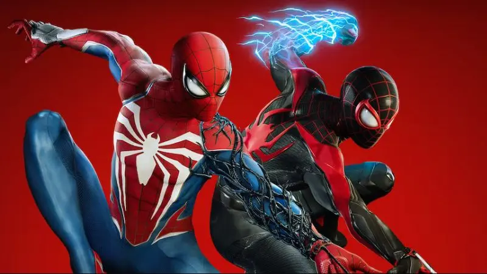
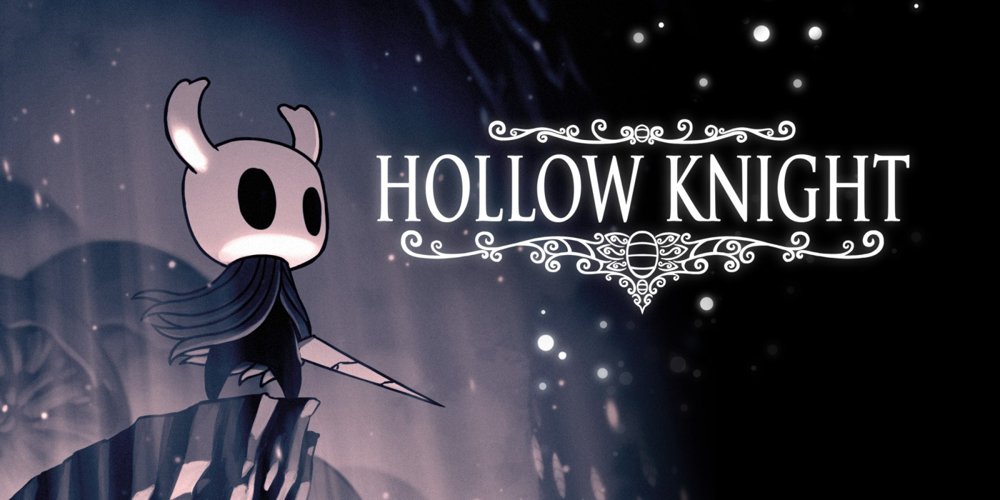

RESIDENT EVIL REQUIEM
É um jogo de survival horror da Capcom, sequência de Village, que narra a investigação da analista do FBI Grace Ashcroft sobre mortes misteriosas em um hotel do Meio-Oeste. A trama conecta-se ao passado de Raccoon City, trazendo Leon S. Kennedy para investigar o bioterrorismo, focando em temas de luto, legado e o impacto duradouro do T-Vírus.
Marvel SpiderMan 2
É um jogo de aventura onde Peter Parker e Miles Morales se unem para proteger Nova York contra o temível Venom e o caçador Kraven. Com mapa ampliado para Queens e Brooklyn, o jogo permite alternar entre os dois heróis instantaneamente, usando novas habilidades como as "Asas de Teia" para deslizar pela cidade

Silent Hill 2
é um clássico de terror psicológico onde James Sunderland viaja à cidade de Silent Hill após receber uma carta de sua esposa, Mary, falecida há três anos, dizendo esperá-lo em seu "lugar especial". Envolta em névoa e monstros, a cidade reflete traumas e culpas de James, que busca respostas enquanto confronta a misteriosa Maria

HOLLOW KNIGHT
é um metroidvania 2D focado na exploração de Hallownest, um vasto reino subterrâneo de insetos agora arruinado por uma "infecção" sobrenatural. O jogador controla um pequeno "Cavaleiro" (Vessel) que busca desvendar os mistérios de uma civilização caída, enfrentando criaturas corrompidas e chefes, enquanto tenta selar ou destruir a Radiância, a entidade divina responsável pela praga que consome as mentes daquele mundo
